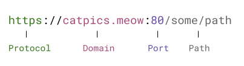

From its inception, the Web has been a game of whackamole between people finding security holes and exploits, and other people plugging these holes and adding defensive security mechanisms.
One of the busiest arenas in this struggle is the interaction between code running on one site (via JavaScript embedded in its page) and other sites; you may have heard about acronyms like XSS, CSRF, SSRF, SOP and CORS - they are all related to this dynamic and fascinating aspect of modern computer security. This post talks specifically about CORS, and what you should know if you're writing servers in Go.
Same-origin policy
Our story starts with the Same-origin policy (SOP) - a mechanism built into browsers that prevents arbitrary access from the site you're currently browsing to other sites. Suppose you're browsing https://catvideos.meow; while you're doing so, your browser will execute JS code from that site's pages.
JS can - among other things - fetch resources from other domains; this is commonly used for images, stats, ads, for loading other JS modules from CDNs and so on.
But it's also an inherently unsafe operation, because what if someone injects malicious code into catvideos.meow that sends requests to https://yourbank.com! Since the JS of catvideos.meow is executed by your browser, this is akin to you opening a new browser window and visiting https://yourbank.com, including providing any log-in information and cookies that may already be saved in your browser's session. That doesn't sound very safe!
This is what the SOP was designed to prevent; generally speaking, except for a limited set of "safe" (but mostly there for historical reasons) use cases like fetching images, embedding and submitting a limited set of forms, JS is not allowed to make cross-origin requests.
A request is considered cross-origin if it's made from origin A to origin B, and any of the following differ between the origins: protocol, domain and port (a default port is assumed per protocol, if not explicitly provided):
If the protocol, domain and port match, the request is valid - the path doesn't matter. Naturally, this is used all the time by JS loading other resources from its own domain.
Local experiment to observe the SOP in action
Let's try a simple experiment to see how this browser protection works; this only requires a couple of small HTML files with a bit of JS. Place two HTML files in the same directory; one should be named page.html and its contents don't matter. The other should be named do-fetch.html, with these contents:
<html>
<head>
<title>Fetch another page</title>
</head>
<body>
<script>
var url = 'http://127.0.0.1:8080/page.html'
fetch(url)
.then(response => {
console.log(response.status);
})
.catch(error => {
console.log("ERROR:", error);
});
</script>
</body>
</html>
It attempts to load page.html from a URL (which points to a local machine's port) via the fetch() API.
First experiment: run a local static file server in the directory containing these two HTML files. Feel free to use my static-server project, but any server will do [1]:
$ go install github.com/eliben/static-server@latest
$ ls
do-fetch.html page.html
$ static-server -port 8080 .
2023/09/03 06:02:10.111818 Serving directory "." on http://127.0.0.1:8080
This serves our two HTML files on local port 8080. Now we can point our browser to http://127.0.0.1:8080/do-fetch.html and open the browser console. There shouldn't be errors, and we should see the printout 200, which is the successful HTTP response from attempting to load page.html. It succeeds because this is a same-origin fetch, from http://127.0.0.1:8080 to itself.
Second experiment: while the static server on port 8080 is still running, run another instance of the server, serving the same directory on a different port - you'll want to do this in a separate terminal:
$ ls
do-fetch.html page.html
$ static-server -port 9999 .
2023/09/03 06:12:19.742790 Serving directory "." on http://127.0.0.1:9999
Now, let's point the browser to http://127.0.0.1:9999/do-fetch.html and open the browser console again. The page won't load, and instead you'll see an error similar to:
Cross-Origin Request Blocked: The Same Origin Policy disallows reading the
remote resource at http://127.0.0.1:8080/page.html. (Reason: CORS header
‘Access-Control-Allow-Origin’ missing).
This is the SOP in action. Here's what's going on:
- As far as the browser is concerned, a web page at origin http://127.0.0.1:9999 is making a fetch call to origin http://127.0.0.1:8080 (note that this destination is hard-coded in the source of do-fetch.html).
- Since the ports are different, these are considered to be different origins, and the fetch is a cross-origin request.
- By the default SOP, cross-origin requests are blocked.
Note that the browser also mentions a CORS header, which is a great segue to our next topic.
CORS
So what is CORS, and how can it help us make requests to different origins? The CORS acronym stands for Cross-Origin Resource Sharing, and this is a good definition from MDN:
Cross-Origin Resource Sharing (CORS) is an HTTP-header based mechanism that allows a server to indicate any origins (domain, scheme, or port) other than its own from which a browser should permit loading resources.
CORS is a simple protocol between an HTTP server and a browser. When a page attempts to make a cross-origin request, the browser attaches a special header to the request with the name Origin; in this header, the browser specifies the origin from which the request originates.
We can actually observe this if we look at the debug console of the browser in more detail in our SOP experiment. In the Network tab, we can examine the exact HTTP request made by the browser to fetch the page from http://127.0.0.1:8080/page.html when do-fetch.html asked for it. We should see something like:
GET /page.html HTTP/1.1
Host: 127.0.0.1:8080
User-Agent: Mozilla/5.0 (X11; Ubuntu; Linux x86_64; rv:109.0) Gecko/20100101 Firefox/117.0
Accept: */*
Accept-Language: en-US,en;q=0.5
Accept-Encoding: gzip, deflate, br
Referer: http://127.0.0.1:9999/
Origin: http://127.0.0.1:9999
The important line here is the last one: it tells the server which origin the request is coming from.
We can also examine the server's response, in which we'll see that the server does not include a special header named Access-Control-Allow-Origin. Since this header is not in the response, the browser assumes that the server doesn't support CORS from the specified origin, and this results in the error we've seen above.
To complete a successful cross-origin request, the server has to approve the request explicitly by returning an Access-Control-Allow-Origin header. The value of the header should be either the origin named in the request's Origin header, or the special value * which means "all origins accepted".
To see this in action, it's time for another experiment; let's write a simple Go server that supports cross-origin requests.
A sample Go server with CORS support
Leaving static file serving behind, let's move closer towards what CORS is actually used for: protecting access to APIs from unknown origins. Here's a simple Go server that serves a very basic API endpoint at /api, returning a hard-coded JSON value:
func apiHandler(w http.ResponseWriter, r *http.Request) {
w.Header().Set("Content-Type", "application/json")
fmt.Fprintln(w, `{"message": "hello"}`)
}
func main() {
port := ":8080"
mux := http.NewServeMux()
mux.HandleFunc("/api", apiHandler)
http.ListenAndServe(port, mux)
}
This server should be started locally; Here's a somewhat modified HTML file with JS making a CORS request to this endpoint, assuming the server runs on local port 8080:
<html>
<head>
<title>Access API through CORS</title>
</head>
<body>
<script>
var url = 'http://localhost:8080/api'
fetch(url)
.then(response => {
if (response.ok) {
return response.json();
} else {
throw new Error('Failed to fetch data');
}
})
.then(data => {
document.body.innerHTML += data.message;
})
.catch(error => {
document.body.innerHTML += "ERROR: " + error;
});
</script>
</body>
</html>
Assuming this code is saved locally in access-through-cors.html, we will serve it with static-server on port 9999, as before:
$ static-server -port 9999 .
2023/09/03 08:01:22.413757 Serving directory "." on http://127.0.0.1:9999
When we open http://127.0.0.1:9999/access-through-cors.html in the browser, we'll see the CORS error again:
Cross-Origin Request Blocked: The Same Origin Policy disallows reading the
remote resource at http://127.0.0.1:8080/api. (Reason: CORS header
‘Access-Control-Allow-Origin’ missing).
Indeed, our server doesn't support CORS yet! This is an important point to emphasize - a server oblivious to CORS means it doesn't support it. In other words, CORS is "opt-in". Since our server doesn't check for the Origin header and doesn't return the expected CORS headers back to the client, the browser assumes that the cross-origin request is denied, and returns an error to the HTML page [2].
Let's fix that, and implement CORS in our server. It's customary to do it as middleware that wraps the HTTP handler. Here's a simple approach:
var originAllowlist = []string{
"http://127.0.0.1:9999",
"http://cats.com",
"http://safe.frontend.net",
}
func checkCORS(next http.Handler) http.Handler {
return http.HandlerFunc(func(w http.ResponseWriter, r *http.Request) {
origin := r.Header.Get("Origin")
if slices.Contains(originAllowlist, origin) {
w.Header().Set("Access-Control-Allow-Origin", origin)
}
w.Header().Add("Vary", "Origin")
next.ServeHTTP(w, r)
})
}
checkCORS is standard Go middleware. It wraps any HTTP handler and adds CORS logic on top; here's how it works:
- It checks if the Origin header is present in the request (the header's Get method will return an empty string for a missing header).
- If yes, it checks its value; if it's in an allow-list of authorized origins, the origin is parroted back to the client in the Access-Control-Allow-Origin header of the response.
- We also set Vary: Origin in the response to avoid problems with caching proxies between the server and the client (see this section in the fetch standard for more details)
- If there is no Origin header, or the origin value is not in our allow-list, the middleware doesn't change the response headers in any way. As we saw before, this is equivalent to saying "I don't support cross-origin requests from that origin".
Obviously, the allow-list solution presented here is ad-hoc, and you are free to implement your own. Some API endpoints want to be truly public and support cross-origin requests from any domain. In such cases, one can just hard-code Access-Control-Allow-Origin: * in all responses, without additional logic. In this case the Vary header isn't required either.
Now that we have the middleware in place, we have to hook it into our server; let's wrap the top-level router, so checkCORS applies to all endpoints we may add to the server in the future:
func main() {
port := ":8080"
mux := http.NewServeMux()
mux.HandleFunc("/api", apiHandler)
http.ListenAndServe(port, checkCORS(mux))
}
If we kill the old server occupying port 8080 and run this one instead, re-loading access-through-cors.html we'll see different results: the page shows "hello" and there are no errors in the console. The CORS request succeeded! Let's examine the response headers:
HTTP/1.1 200 OK
Access-Control-Allow-Origin: http://127.0.0.1:9999
Content-Type: application/json
Vary: Origin
Date: Sun, 03 Sep 2023 16:33:00 GMT
Content-Length: 21
The custom headers set by our middleware are highlighted; the request was made by a page served on local port 9999, and this is in the Origin header sent by the browser. Therefore, our response headers permit the browser to communicate the data back to the client code and finish without errors. As an exercise, modify the code of our CORS middleware to set * instead of a specific origin, then re-run the server and client page, and examine the response header again.
Preflight requests
As we've seen, when a page issues a cross-origin request, the browser obliges, but withholds any response details from the fetching code unless the server explicitly agreed to receive the request via CORS. This can be worrisome, though; what if the request itself causes something unsafe to happen on the server?
This is what preflight requests are for; for some HTTP requests that aren't deemed inherently safe, a browser will first send a special OPTIONS request (called "preflight") to double check that the server is ready for this kind of request from the specific origin. Only if answered in the affirmative, the browser will then send the actual HTTP request.
The terminology here gets a bit confusing. The old CORS standard defines simple requests as those that don't require preflight, but the new fetch standard that defines CORS doesn't use this term. Generally, GET, HEAD and POST requests restricted to certain headers and content types are considered simple; for the full definition, see the linked standards. Anything that isn't simple requires a preflight [3].
The protocol goes as follows:
- If the client tries to send a request that's not "simple", the browser will first send an OPTIONS request with the Access-Control-Request-Method header. The value of this header is the actual request method the client wants. The OPTIONS request also carries an Origin header specifying which origin this is coming from.
- If the server supports the specified method from this origin, it returns a successful response with the Access-Control-Allow-Methods header where it lists the supported methods from this origin.
- The browser processes the response to OPTIONS and determines whether the request it asked to send on behalf of the origin is on the allow-list; if yes, it then sends the actual request the client made. Note that since HTTP is stateless, the actual request will also follow the CORS protocol.
There's another feature of preflight requests which I'm not going to cover in detail here, but it's easy enough to implement if needed: permissions for special headers. Preflight requests not only protect servers from potentially unsafe methods, but also from potentially unsafe headers. If the client tries to send a cross-origin request with such headers, the browser will send a preflight with the Access-Control-Request-Headers header listing these headers; the server has to reply with Access-Control-Allow-Headers in order for the protocol to succeed.
Adding preflight support to our Go server
Before working on the server's code, let's see how the browser sends preflight requests on behalf of a fetch call. We'll update the JS code in our HTML page just a bit:
var url = 'http://localhost:8080/api'
fetch(url, {method: 'DELETE'})
.then(response => {
if (response.ok) {
return response.json();
} else {
throw new Error('Failed to fetch data');
}
})
.then(data => {
document.body.innerHTML += data.message;
})
.catch(error => {
document.body.innerHTML += "ERROR: " + error;
});
With the old CORS server (that doesn't support preflight requests yet) still running on port 8080, when we open this page in the browser served at 127.0.0.1:9999, we'll see an error:
Cross-Origin Request Blocked: The Same Origin Policy disallows reading the
remote resource at http://localhost:8080/api. (Reason: Did not find method in
CORS header ‘Access-Control-Allow-Methods’).
Diving deeper, we find that the browser sent an OPTIONS request to the server with the following relevant headers:
Access-Control-Request-Method: DELETE
Origin: http://127.0.0.1:9999
This means "hey server, some code at origin 127.0.0.1:9999 wants to send you a DELETE request, are you cool with that?"
Did our server reply? Yes, with the same response it sent for the GET request in the previous example:
HTTP/1.1 200 OK
Access-Control-Allow-Origin: http://127.0.0.1:9999
Content-Type: application/json
Vary: Origin
Date: Sun, 03 Sep 2023 21:34:03 GMT
Content-Length: 21
That's because we haven't actually restricted the method in our Go server: it answers the same response to all methods - in this case OPTIONS! Since the browser sent our server a preflight for DELETE, it expected the server to reply with Access-Control-Allow-Methods that lists DELETE. The server didn't, so the browser aborted the procedure and returned an error to the client (without actually sending the DELETE request itself).
Let's now fix that, by implementing preflight in our server. We'll start with a helper function that reports whether the given request is a preflight request:
func isPreflight(r *http.Request) bool {
return r.Method == "OPTIONS" &&
r.Header.Get("Origin") != "" &&
r.Header.Get("Access-Control-Request-Method") != ""
}
It's important to note that all three conditions have to be true for the request to be considered preflight. Next, we'll modify our checkCORS middleware to support preflights:
var originAllowlist = []string{
"http://127.0.0.1:9999",
"http://cats.com",
"http://safe.frontend.net",
}
var methodAllowlist = []string{"GET", "POST", "DELETE", "OPTIONS"}
func checkCORS(next http.Handler) http.Handler {
return http.HandlerFunc(func(w http.ResponseWriter, r *http.Request) {
if isPreflight(r) {
origin := r.Header.Get("Origin")
method := r.Header.Get("Access-Control-Request-Method")
if slices.Contains(originAllowlist, origin) && slices.Contains(methodAllowlist, method) {
w.Header().Set("Access-Control-Allow-Origin", origin)
w.Header().Set("Access-Control-Allow-Methods", strings.Join(methodAllowlist, ", "))
}
} else {
// Not a preflight: regular request.
origin := r.Header.Get("Origin")
if slices.Contains(originAllowlist, origin) {
w.Header().Set("Access-Control-Allow-Origin", origin)
}
}
w.Header().Add("Vary", "Origin")
next.ServeHTTP(w, r)
})
}
If we run this updated server on port 8080 and invoke the HTML page that does a fetch with method: 'DELETE' again, the request will be successful. The server now has a tailored reply for the OPTIONS preflight request:
HTTP/1.1 200 OK
Access-Control-Allow-Methods: GET, POST, DELETE, OPTIONS
Access-Control-Allow-Origin: http://127.0.0.1:9999
Content-Type: application/json
Vary: Origin
Date: Sun, 03 Sep 2023 13:12:29 GMT
Content-Length: 21
The browser then proceeds to send the DELETE request itself:
DELETE /api HTTP/1.1
Host: localhost:8080
User-Agent: Mozilla/5.0 (X11; Ubuntu; Linux x86_64; rv:109.0) Gecko/20100101 Firefox/117.0
Accept: */*
Accept-Language: en-US,en;q=0.5
Accept-Encoding: gzip, deflate, br
Referer: http://127.0.0.1:9999/
Origin: http://127.0.0.1:9999
Which gets a successful reply:
HTTP/1.1 200 OK
Access-Control-Allow-Origin: http://127.0.0.1:9999
Content-Type: application/json
Vary: Origin
Date: Sun, 03 Sep 2023 13:12:29 GMT
Content-Length: 21
Cookies and CORS
At the beginning of the post we discussed how sending cookies on behalf of the visiting browser is one of the main security issues the SOP and CORS try to address. Now it's time to discuss this in more detail.
Let's go back to our server and have it set a cookie when a certain path is accessed. Our main function becomes:
func main() {
port := ":8080"
mux := http.NewServeMux()
mux.HandleFunc("/api", apiHandler)
mux.HandleFunc("/getcookie", getCookieHandler)
http.ListenAndServe(port, checkCORS(mux))
}
And getCookieHandler is:
func getCookieHandler(w http.ResponseWriter, r *http.Request) {
w.Header().Set("Set-Cookie", "somekey=somevalue")
fmt.Fprintln(w, `{"message": "you're welcome"}`)
}
Very simple: everyone visiting the /getcookie route gets a cookie! If we run this server on port 8080 as usual and visit http://http://127.0.0.1:8080/getcookie, we should see the cookie sent in the response header:
HTTP/1.1 200 OK
Set-Cookie: somekey=somevalue
Date: Sun, 03 Sep 2023 13:25:09 GMT
Content-Length: 30
Content-Type: text/plain; charset=utf-8
Note: this isn't a CORS request; this is the browser accessing the server directly. Opening the developer console ("Storage" tab), we should be able to see this cookie is now associated with 127.0.0.1:8080, something like:
If we refresh the page, we'll notice that the browser now sends a Cookie header with this cookie in requests to 127.0.0.1:8080 - as expected!
Next, let's try to access /api again from our HTML page served on a different origin (port 9999):
<html>
<head>
<title>CORS with credentials</title>
</head>
<body>
<script>
var url = 'http://localhost:8080/api'
fetch(url, {credentials: "include"})
.then(response => {
if (response.ok) {
return response.json();
} else {
throw new Error('Failed to fetch data');
}
})
.then(data => {
document.body.innerHTML += data.message;
})
.catch(error => {
document.body.innerHTML += "ERROR: " + error;
});
</script>
</body>
</html>
This is where things get interesting; our browser has a cookie associated with 127.0.0.1:8080, and now a different origin makes a request to this domain inside our browser.
fetch won't set cookies by default, and it needs to be told to do so explicitly (this is yet another security mechanism). The highlighted line shows how to do this, by adding a credentials options set to true. When we serve this page on http://127.0.0.1:9999/getcookie.html, we'll see that the cookie is sent in the request with this header:
Cookie: somekey=somevalue
But there's a CORS error in the console, and the browser returns an error to fetch:
Cross-Origin Request Blocked: The Same Origin Policy disallows reading the
remote resource at http://localhost:8080/api. (Reason: expected ‘true’ in CORS
header ‘Access-Control-Allow-Credentials’).
This is because our server doesn't support credentials for CORS yet! As the error suggests, to signal that credentials are supported, the server has to set a special header named Access-Control-Allow-Credentials to true:
w.Header().Set("Access-Control-Allow-Credentials", "true")
If we rerun the server with this header set, the CORS request with the cookie succeeds.
Once again, note that for "simple" requests the browser does send the request with the cookie to the server; it just refuses to get any reply back to the fetch unless the server explicitly accepts credentials over CORS by returning a special header. It's the server's job to ensure that nothing unsafe happens as a result of an unauthorized cross-origin request. For non-simple methods, the browser will expect Access-Control-Allow-Credentials to be set on the response to a preflight request, and the actual request won't have the cookie unless this condition is unsatisfied.
Next steps
This post is an introduction to CORS for Go programmers. It doesn't cover all the aspects and details of CORS, but should be a good foundation for finding out more, if desired. For additional resources:
- The fetch standard is the authoritative definition of CORS.
- MDN articles are always great.
- The web.dev articles on SOP and CORS are also recommended.
Finally, it's unlikely that you'll have to roll your own CORS implementation. Popular Go web frameworks like Gin and Echo have CORS middleware built-in, and projects like rs/cors provide a framework-agnostic solution.
Code
All the Go and HTML code for this post's samples and experiments is available on GitHub.
| [1] | When doing experiments involving fetch and other non-trivial JS, it's strongly recommended to actually serve the HTML files locally, rather than just opening them with file:/// in the browser. Specifically for CORS, file:/// has some additional nuances (e.g. the Origin header is set to null). Note also that having different ports on 127.0.0.1 is sufficient to demonstrate the topics of this post, because ports count in the definition of "origin". An alternative is to use the system's /etc/hosts configuration file to define domain aliases for 127.0.0.1, and run our static server with sudo to enable serving on port 80. This provides a slightly more realistic emulation, like accessing http://foo.domain from http://bar.domain, since the browser is oblivious to domain aliases (it will even consider localhost and 127.0.0.1 distinct for the purposes of CORS). You're free to do so as an exercise, but having different ports to represents different origins is generally sufficient for our needs. |
| [2] | Note that our Go server still returns a valid JSON response on the /api endpoint, and the browser gets this response back. However, the browser won't share it with the client fetch() call, reporting an error instead. In fact, if we just curl to http://127.0.0.1:8080/api while the server is running, we'll get the data back. The CORS mechanism is a browser feature, not part of the actual HTTP protocol. This highlights a very important point: while CORS is part of a security solution, it's absolutely unsuitable as the main (or only) security mechanism. If you expose an API endpoint on the public internet, clients will be able to access it. Browsers will block cross-origin requests from client-side JavaScript, but that's about it. If you're not actually interested in your endpoint being public, you should use a real authentication solution. And if your server will dutifully execute a DELETE request from any client on the internet and destroy critical records - you're going to have a bad time. Don't forget that HTTP is stateless, and the client is not required to send you a preflight request before a DELETE; as a matter of fact, all these requests can be easily spoofed using non-browser clients. |
| [3] | You may wonder why POST is considered to be safe; unfortunately, it's not a good technical reason but rather backward-compatibility. Forms do submits via POST and this is something that worked historically, so CORS couldn't interfere with that. In all fairness, it's a best practice to use CSRF protection in forms anyway, so there's already a security mechanism applied. |